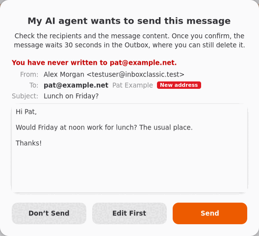

Quand un agent envoie du courrier
Chaque message qu'un agent d'IA veut envoyer vous est d'abord montré, et attend dans la Boîte d'envoi avant de partir.
Un agent ne peut envoyer du courrier que si vous l'y avez autorisé, et chaque message seulement après votre accord.

Quand l'agent veut envoyer un message, Inbox Classic l'affiche avec chaque destinataire par son adresse. Les adresses auxquelles vous n'avez jamais écrit sont signalées par Nouvelle adresse.
- Lisez les destinataires et le texte.
- Choisissez l'une des options :
- Envoyer l'envoie. Ce bouton ne s'active qu'après un instant, pour que vous ne puissiez pas cliquer dessus par accident.
- Modifier d'abord l'ouvre dans un nouveau message pour que vous le modifiiez.
- Ne pas envoyer, le choix par défaut, ne l'envoie pas.
Un message que vous envoyez attend 30 secondes dans la Boîte d'envoi. Tant qu'il n'est pas parti, vous pouvez l'y supprimer, ou cliquer sur Annuler dans Outils > Agents d'IA.